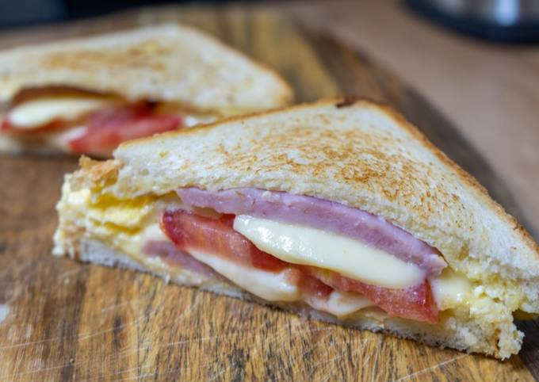

15 марта в 12:54
Горячие бутерброды с яйцом, ветчиной и сыром (на сковороде)
Горячий бутерброд с яйцом, ветчиной и сыром получается вкусным и сытным. Между двумя подрумяненными кусочками хлеба – взбитое жареное яйцо, которое придаёт особый нежный вкус, а также ветчина и расплавленный сыр. Готовятся бутерброды довольно интересным и простым способом прямо на сковороде – удобно и вкусно.
Смотреть рецепт полностью >>>
12 октября в 13:44

Тосты с сыром и зеленью
Горячие бутерброды, приготовленные на сковороде, — это всегда удобный перекус и быстрый вкусный завтрак! От выбранной начинки будет зависеть вкус бутербродов. Приготовим горячие бутерброды с сыром и петрушкой. Сыр во время обжаривания расплавится, петрушка раскроет свой аромат. А для придания бутербродам хрустящей корочки обжарим на сухой сковороде!
Смотреть рецепт полностью >>>